Contents
MyMainScript
tic;
Q2. a) Linear stretching
Formula used:
ratio = 1/double(maxa-mina);
img(:,:,n) = double((temp(:,:)-mina))*ratio;
myLinearContrastStretching(imread('../data/barbara.png','png'));
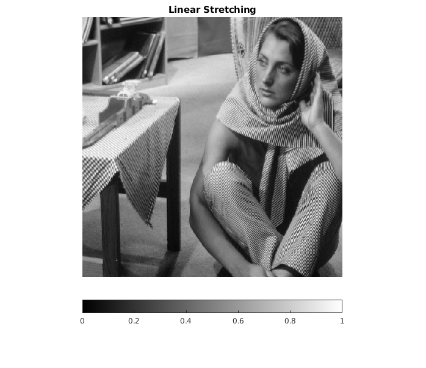
myLinearContrastStretching(imread('../data/TEM.png','png'));
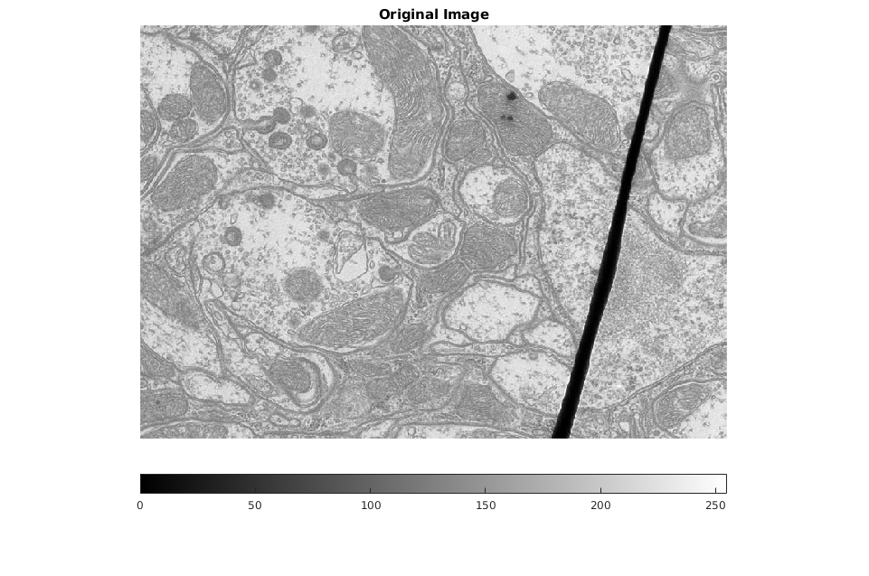 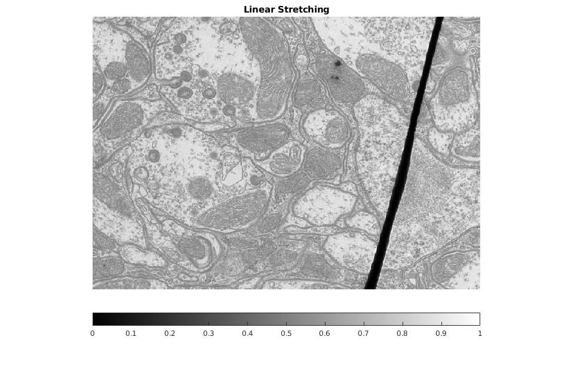
myLinearContrastStretching(imread('../data/canyon.png','png'));
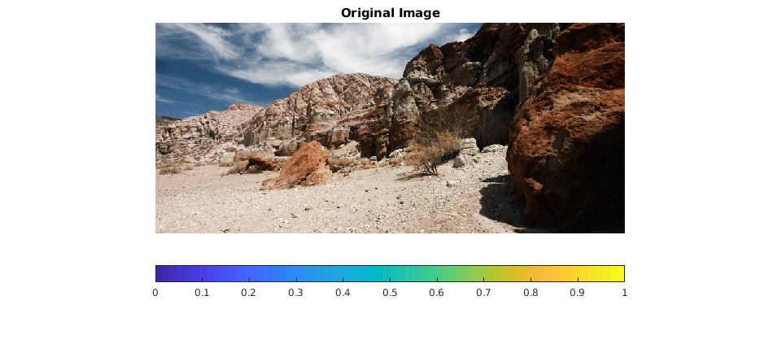
myLinearContrastStretching(imread('../data/church.png','png'));
Warning: Image is too big to fit on screen; displaying at 33%
Warning: Image is too big to fit on screen; displaying at 33%
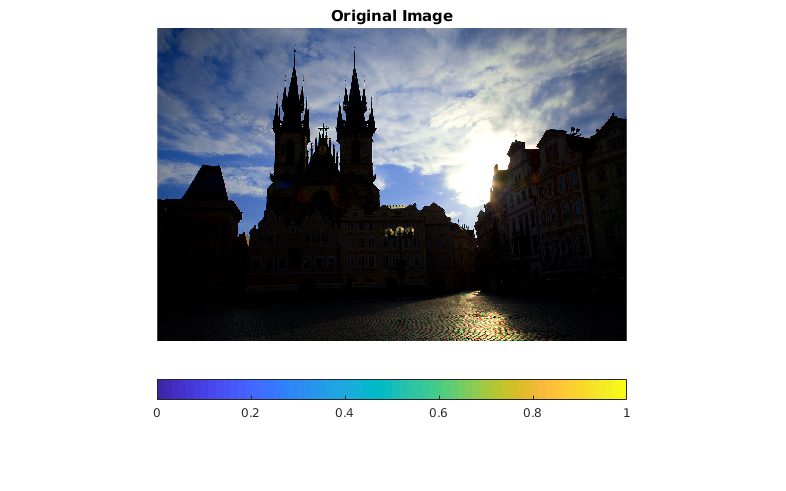
Q2. b) Histogram equalisation
myHE(imread('../data/barbara.png','png'));
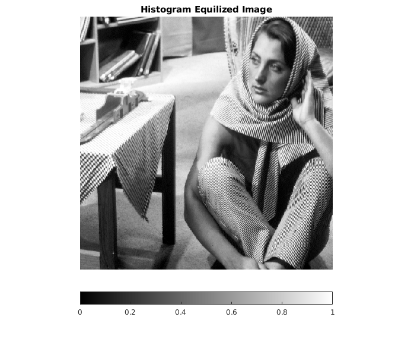
myHE(imread('../data/canyon.png','png'));
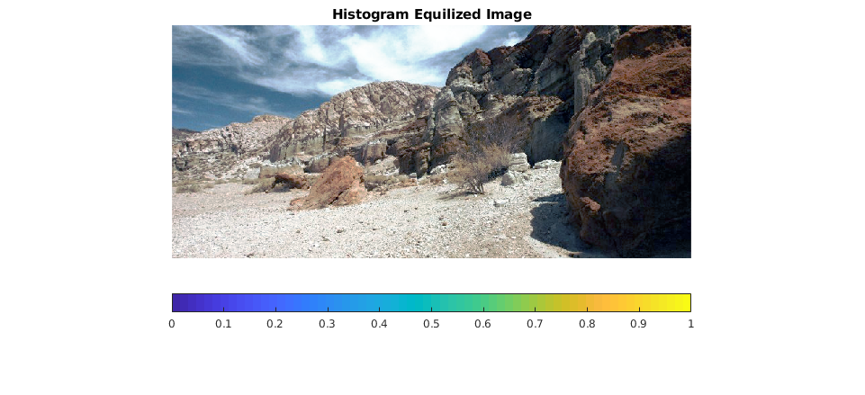
myHE(imread('../data/TEM.png','png'));
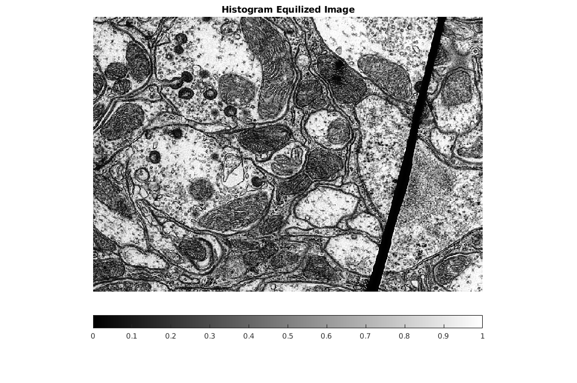
myHE(imread('../data/church.png','png'));
Warning: Image is too big to fit on screen; displaying at 33%
Warning: Image is too big to fit on screen; displaying at 33%
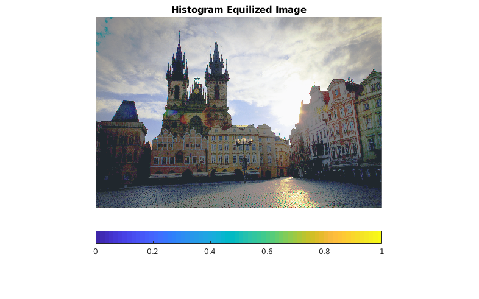
Q2 c) Histogram Matching
myHM;
Warning: Image is too big to fit on screen; displaying at 33%
Warning: Image is too big to fit on screen; displaying at 33%
Warning: Image is too big to fit on screen; displaying at 33%
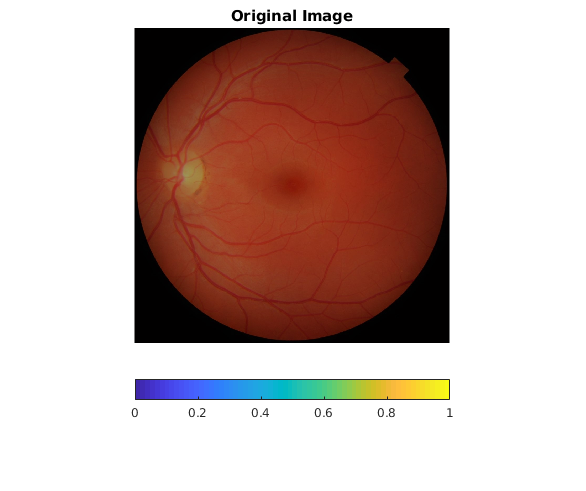 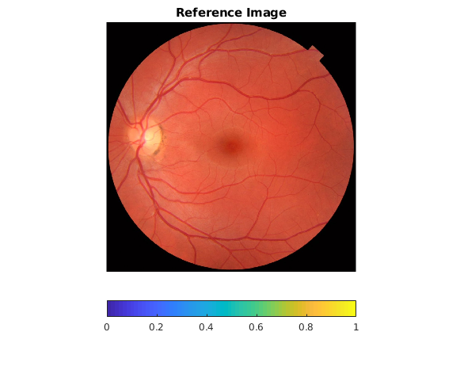 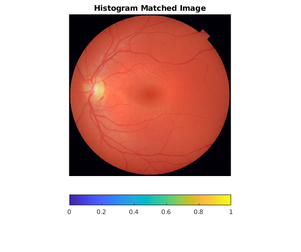
Q2 d)AHE with window size 251
myAHE(251, imread('../data/barbara.png','png'));
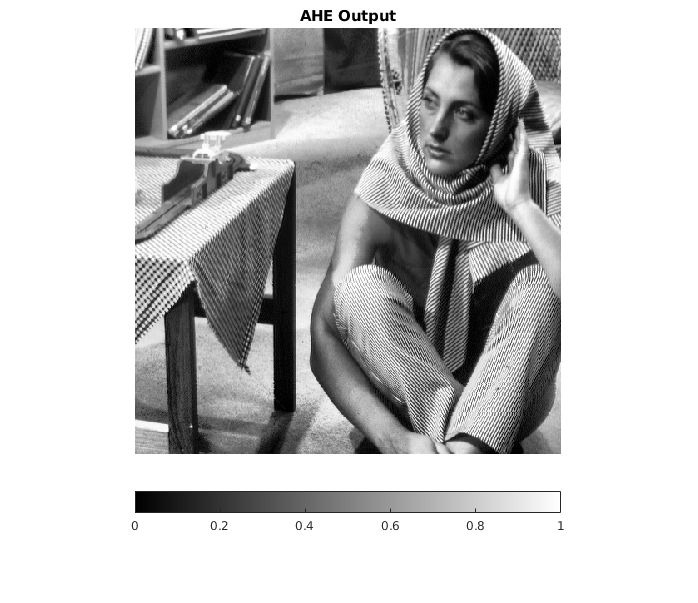
myAHE(251, imread('../data/TEM.png','png'));
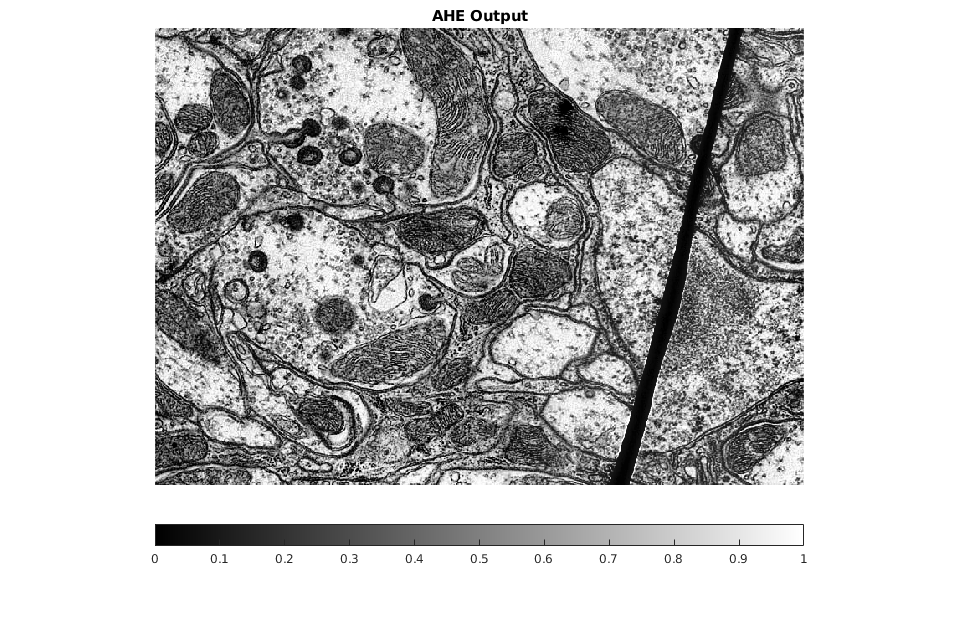
myAHE(251, imread('../data/canyon.png','png'));
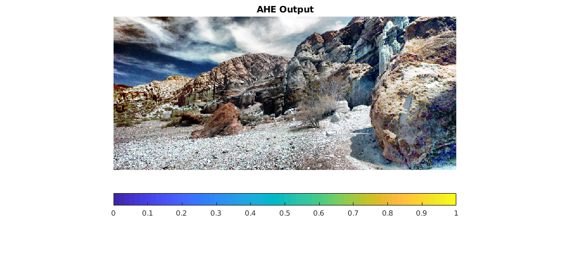
Window size = 31, noisy
myAHE(31, imread('../data/barbara.png','png'));
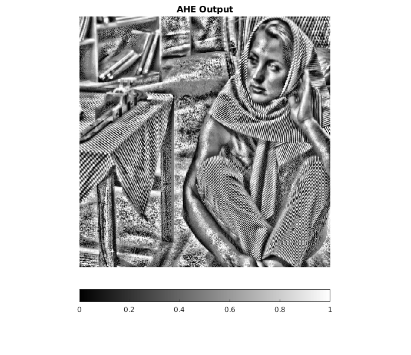
Window size = 1001, less contrast
myAHE(1001, imread('../data/barbara.png','png'));
Q2 e)CLAHE with window size = 31, threshold = 10
myCLAHE(10, imread('../data/barbara.png','png'));
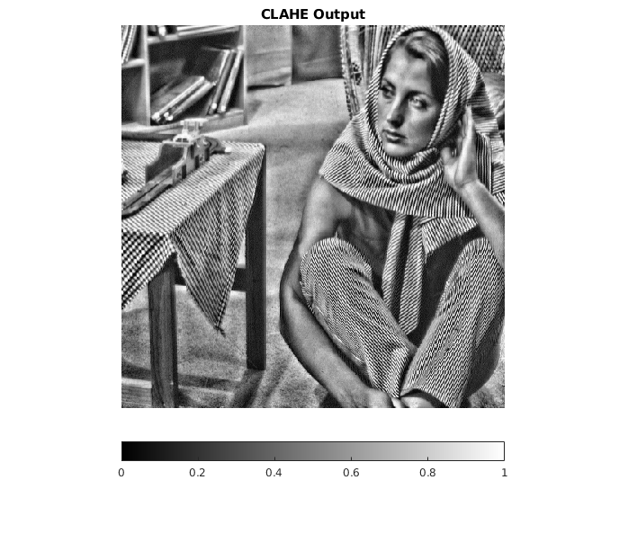
myCLAHE(10, imread('../data/TEM.png','png'));
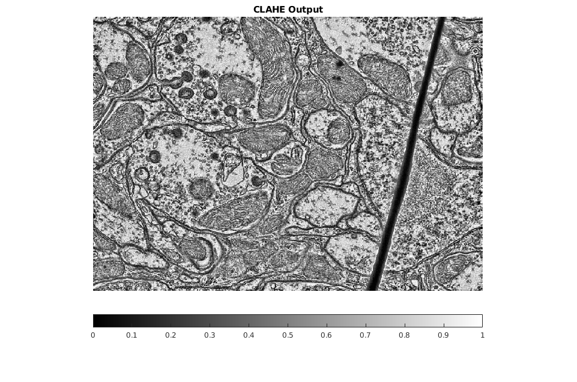
myCLAHE(10, imread('../data/canyon.png','png'));
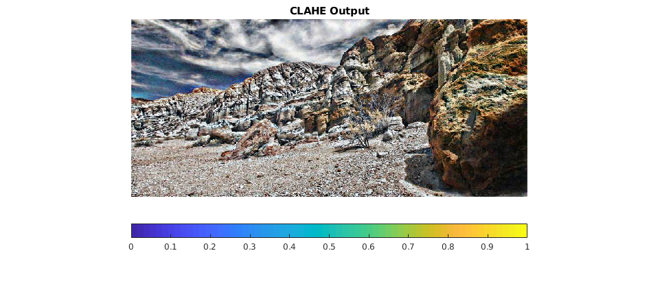
threshold = 5
myCLAHE(5, imread('../data/canyon.png','png'));
toc;
Elapsed time is 499.432448 seconds.
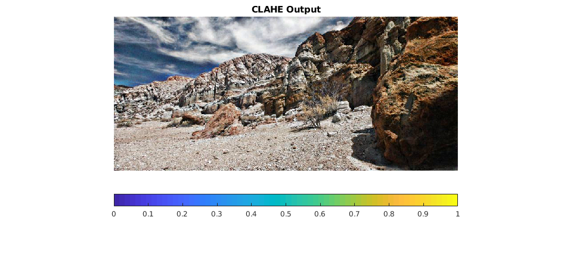